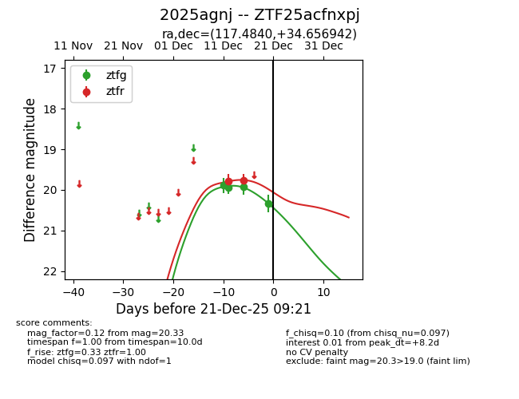
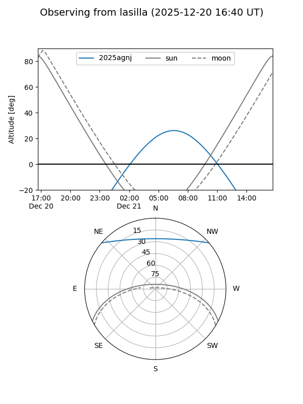
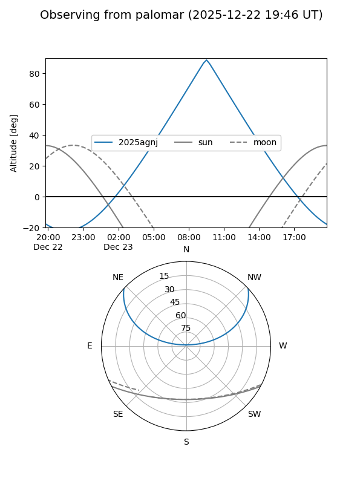
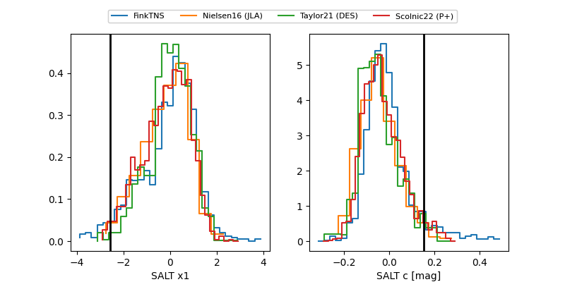

2025agnj
Target 2025agnj at 2025-12-21 09:23
Aliases and brokers:
FINK: fink-portal.org/ZTF25acfnxpj
Lasair: lasair-ztf.lsst.ac.uk/objects/ZTF25acfnxpj
ALeRCE: alerce.online/object/ZTF25acfnxpj
TNS: wis-tns.org/object/2025agnj
YSE: ziggy.ucolick.org/yse/transient_detail/2025agnj
alt names
ZTF25acfnxpj (ztf,fink_ztf)
2025agnj (tns,yse)
Coordinates:
equatorial (ra, dec) = 117.4840,+34.65694
equatorial (HMS+DMS) = 07:49:56.15,+34:39:24.99
galactic (l, b) = (185.5981,+26.36819)
Flags:
Photometry:
last ztfg=20.33, ztfr=19.76
4 ztfg, 2 ztfr detections
Lightcurve

Visibility


Additional plots
